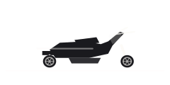

Deux-roues et quads
BWs 125
BWs 125 dans GTA VI : deux-roues et quads. Inspiration : Yamaha BWs 125. Vu dans un support officiel, sans nom communiqué.
Silhouette temporaire en attendant l’intégration des images du véhicule.
Ce que montrent les visuels
Le scooter urbain à gros pneus dérivé du Yamaha BWs 125, celui qu’on gare n’importe où et qui encaisse les bordures sans broncher. Le nom en jeu n’a pas été communiqué. L’Extended Look le glisse dans la circulation d’un quartier résidentiel.
Fiche de route
BWs 125 appartient à la catégorie deux-roues et quads du catalogue. Aperçu officiellement, nommé par déduction : cette fiche garde le nom le plus probable et le changera dès que Rockstar en publiera un. Il apparaît dans An Extended Look, la longue séquence de présentation publiée par Rockstar. L’inspiration vient du Japon, une origine fréquente pour les modèles compacts et sportifs de la série.
Cette fiche se complétera avec le jeu : prix d’achat, performances mesurées, concessions où le trouver, options chez Rideout Customs.
Le rapprochement réel
Le rapprochement retenu pour ce véhicule est Yamaha BWs 125. Il s’agit d’une comparaison visuelle, pas d’une information officielle : le studio ne commente pas ses inspirations.
Sa place dans un GTA
Dans un GTA, une moto, c’est la vitesse et l’agilité au prix de la protection. Sportives, cruisers, enduros et scooters n’ont pas du tout le même usage.
Identité
| Modèle | BWs 125 |
|---|---|
| Constructeur | Marque inconnue |
| Statut | Vu dans un support officiel |
| Catégorie | Deux-roues et quads |
| Inspiration réelle | Yamaha BWs 125 (rapprochement communautaire) |
| Origine du modèle | Modèle japonais |
| Source | Extended Look |
Fiche documentaire
Ce qui n’est pas encore publié garde son état : rien n’est inventé, et les coûts d’usage ne sont pas des mécaniques confirmées.
L’obtenir
- Prix
- Prix à venir
- Achetable
- Achat à confirmer
- Comment l’obtenir
- Obtention à confirmer
- Où le trouver
- Emplacement à venir
Performances
- Accélération
- À confirmer
- Vitesse maximale
- À confirmerUne vitesse maximale n’est pas une vitesse de trajet.
- Freinage
- À confirmer
- Tenue de route
- À confirmer
Capacités
- Places
- À confirmer
- Terrain
- routeEstiméDéduit du type de véhicule (catégorie du site), pas d’une fiche technique.
- Chargement
- À confirmer
Coûts d’usage
- Carburant
- Carburant : mécanique non confirméeUne jauge vue dans une bande-annonce ne prouve ni un prix, ni une consommation, ni un coût d’usage.
- Entretien
- Entretien : mécanique non confirméeAucun coût d’entretien de véhicule n’est annoncé pour GTA VI.
- Réparations
- Réparations : mécanique non confirméeLes réparations payantes de GTA V ne prouvent rien pour GTA VI.
- Assurance
- Assurance : mécanique non confirméeAucune assurance de véhicule n’est annoncée pour GTA VI.
- Revente
- Revente : mécanique non confirméeUne revente compte seulement si elle est possible et si son prix est connu ou choisi comme hypothèse. Elle ne réduit jamais l’argent à payer aujourd’hui.
Sur la carte de Leonida
Vendeurs, atelier et circuit sont déjà cartographiés. Le détail des apparitions par véhicule suivra le lancement.


Deux-roues et quads
BWs 125
Où le trouver : Emplacement à venir
Lieux liés aux deux-roues et quads sur notre carte (pas un emplacement confirmé pour ce véhicule) : Vapid Dealership, Baller Dealership, Marlin Motors, Status Auto Resort, Rideout Customs, Chip’s Body Shop, Watkins Auto Parts, Ambrosia Raceway Park.
Lieux liés sur notre carte
- Vapid DealershipConcessions · SouthsideVoir sur la carte
- Baller DealershipConcessions · SouthsideVoir sur la carte
- Marlin MotorsConcessions · SouthsideVoir sur la carte
- Status Auto ResortConcessions · CrosstownVoir sur la carte
- Rideout CustomsAteliers · CrosstownVoir sur la carte
- Chip’s Body ShopAteliers · Key LentoVoir sur la carte
- Watkins Auto PartsAteliers · Port GellhornVoir sur la carte
- Ambrosia Raceway ParkAérodromes et circuitVoir sur la carte
Une erreur sur cette fiche ? Chaque modèle réel cité est une déduction tirée des images officielles. Le studio ne confirme rien, et nous n’exploitons aucun contenu volé. Si tu as une correction, la page Contact est là pour ça.